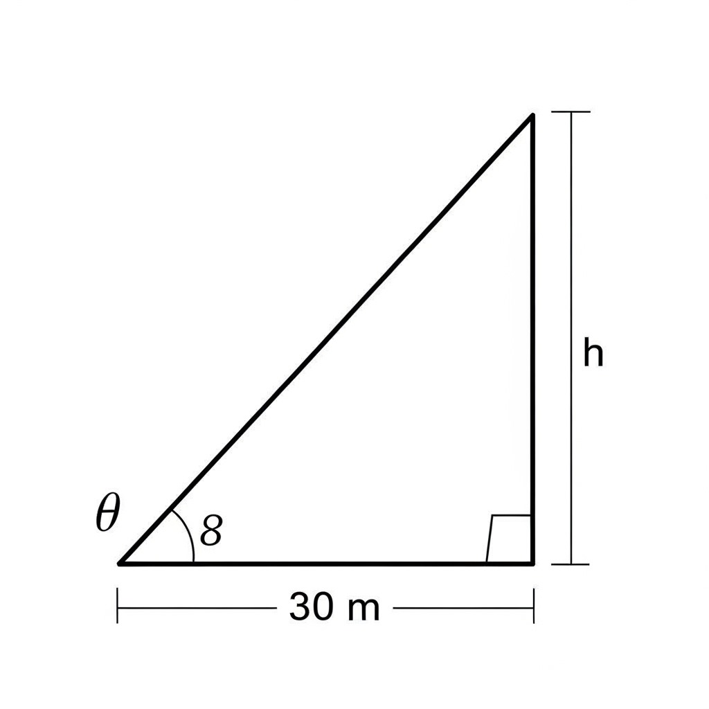
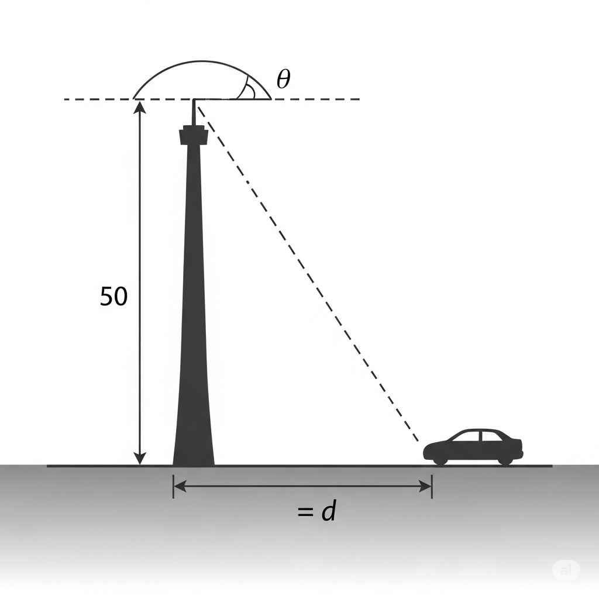
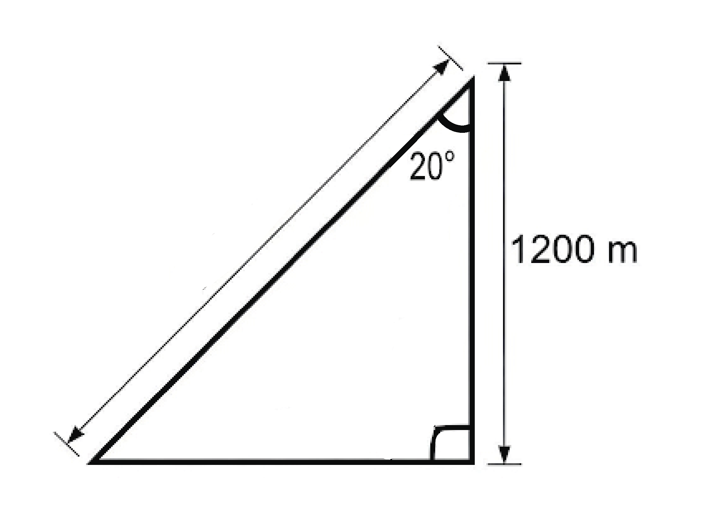
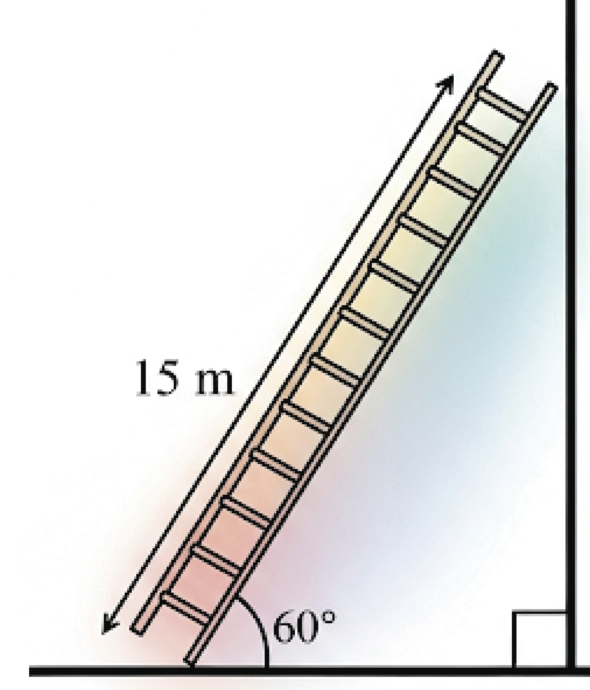
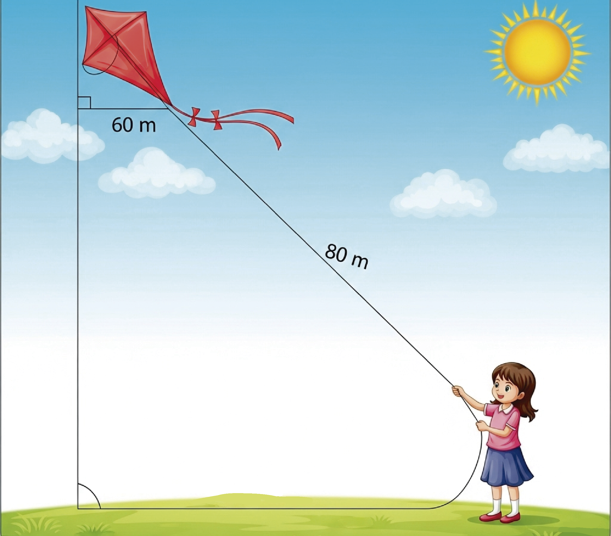

¡A Practicar Funciones Trigonométricas!
Ejercicio 1
1. Un observador a 30 metros de la base de un edificio, mira la parte más alta con un ángulo de elevación de 45°. ¿Cuál es la altura del edificio?

Ejercicio 2
2. Desde la cima de una torre de 50 metros de altura, el ángulo de depresión a un coche es de 30°. ¿A qué distancia horizontal de la base de la torre se encuentra el coche? Redondea tu respuesta a dos decimales.

Ejercicio 3
3. Un avión vuela a una altitud de 1200 metros. Si el ángulo de depresión desde el avión a la pista de aterrizaje es de 20°, ¿Cuál es la distancia en línea recta (hipotenusa) desde el avión hasta la pista? Redondea tu respuesta a dos decimales.

Ejercicio 4
4. Una escalera de 15 metros está apoyada contra una pared. Si la base de la escalera forma un ángulo de 60° con el suelo. ¿A qué distancia horizontal de la pared está la base de la escalera?

Ejercicio 5
5. Una niña suelta una cometa con una cuerda de 80 metros de largo. Si la cometa se encuentra a una altura de 60 metros sobre el suelo, ¿Cuál es el ángulo de elevación de la cometa respecto a la niña? Redondea tu respuesta a un decimal.

¡Felicidades!
Has aplicado las Funciones Trigonométricas con éxito. ¡Sigue practicando!